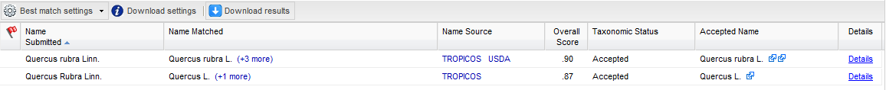
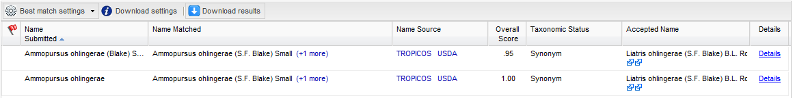
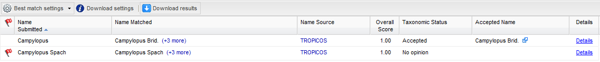
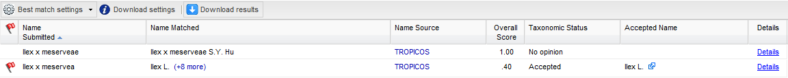
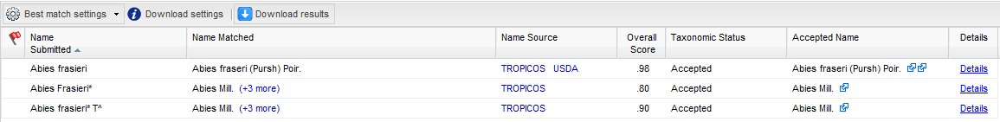

How To Optimize Your Search
While we have designed the TNRS to handle most botanical data formats found in a majority of datasets, there are a few issues that should be considered in order to increase the probability that the TNRS correctly matches your name.- Make sure that the first letter of each genus name is capitalized.
- Make sure that each specific epithet (and subspecific epithet, if applicable) is all lowercase.
- Try submitting names without author strings at the end of the name.
- The TNRS currently does not fuzzy match hybrid names. If a submitted name is mispelled, the TNRS will not find it.
- Try to strip unwanted characters before submitting your names.
- Change the match score threshold.
- Inspect your results!
In the second example below, the incorrectly capitalized epithet "Rubra" prevents the name from matching to species.
In the example below, the difference in spelling between the author of the name submitted and the name matched lowers the overall match score, relative to submitting the name alone, without the author string.
Be careful, however. Including the author name can sometimes increase match accuracy, especially if homonyms exist (the same name used by different authors to refer to different species). In the example below, the name retured by default for the Campylopus, without the author, is the accepted genus Campylopus Brid., a moss.
This is acceptable if the moss is the intended meaning. However, Campylopus was also later (and incorrectly) used by the author Spach to refer to a genus of trees in the family Clusiaceae. Even though the second name is an illegitamate posterior homonym, it clearly refers to the tree and not the moss; by including the author the intended meaning is preserved.
Note: Including the family name with the name will also distinguish between homonyms in different families (see recommendation #8 below)
You should consider this tradeoff when determining whether to omit or include the author string.
In the example below, the first name is spelled correctly; the second name is not.
While the TNRS automatically strips out odd characters that are not used in botanical nomenclature (such as punctuation, underscores, +, %, #, etc.), names that include many such characters produce in lower match scores, potentially preventing the TNRS from discovering the correct name.
Note the image below showing the effect of submitting misspelled names with and without odd characters:
By default, names will be returned to you in a way that maximizes the number of returned matches (lowest setting). By increasing the match threshold, you can increase the exactness of the names being returned for your submitted name. However, this may lead to names being missed, especially in the case of badly misspelled names.
It is especially important you inspect results flagged with warnings or names with more than one possible match. Names with more than one match that have the hyperlinked words "(+x more)" after the name matched ("x" is the number of additional possible matches).
Click on the hyperlink to see a list of all possible matches. Sometimes your intended name will be a lower-ranked match. This is especially important if you have set higher taxonomic constraint to ON.